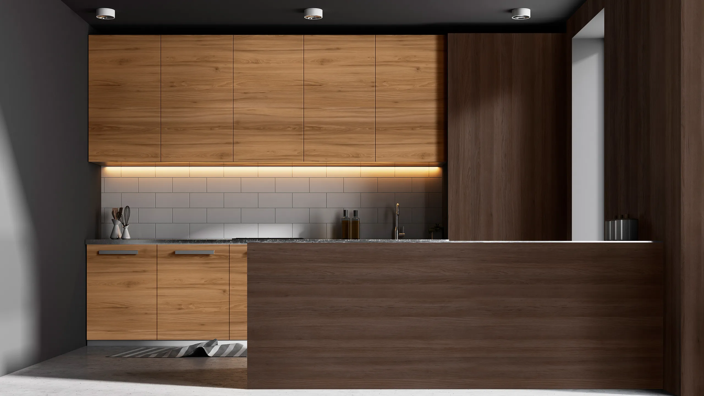
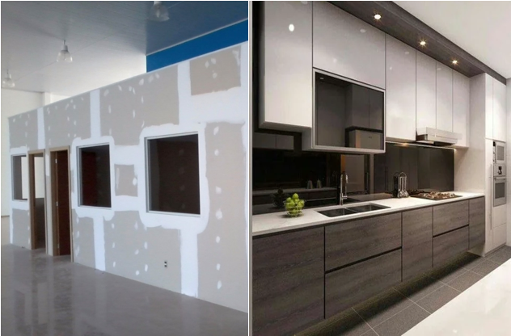

Somos una empresa caracterizada por nuestra amabilidad en la atención, brindando siempre un trato cercano y de confianza a cada cliente. Nos destacamos por nuestra responsabilidad en cada proyecto, asegurando acabados de calidad en trabajos de melamina, y por nuestra puntualidad en la entrega, cumpliendo cada compromiso en el tiempo acordado. Nos apasiona transformar ideas en espacios funcionales y estéticos, adaptándonos a las necesidades de cada persona. “Si puedes crearlo, lo hacemos realidad.”
Nuestros servicios se dividen en dos unidades principales:
